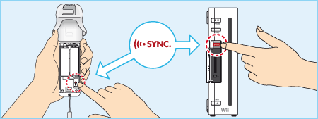
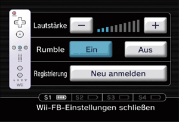

3 |
Vorbereitung des Controllers |
 |
Die jeweilige Handhabung des Controllers hängt davon ab, ob du die Wii-Fernbedienung allein oder in Kombination mit anderem Wii-Zubehör verwendest.
 Hinweis: Weitere Informationen zur Handhabung findest du in der Bedienungsanleitung des entsprechenden Controllers.


Hinweis: Wenn der Stopper an der Handgelenksschlaufe über einen Hebel verfügt, dann schließe den Hebel, bis du einen Klick hörst, damit sich der Stopper nicht löst.
Die Registrierung ermöglicht der Wii-Fernbedienung, mit der Wii-Konsole Daten auszutauschen.
Um die Wii-Fernbedienung an einer Wii-Konsole zu verwenden, muss sie zunächst registriert werden.
Es gibt zwei verschiedene Modi zur Registrierung:
Standard-Modus – Der Standard-Modus wird verwendet, wenn weitere Wii-Fernbedienungen an der Wii-Konsole registriert werden sollen oder wenn du deine ursprüngliche Wii-Fernbedienung erneut registrieren willst. Nach erfolgter Registrierung bleibt die Wii-Fernbedienung so lange an der Wii-Konsole registriert, bis die Einstellungen durch Registrierung an einer anderen Konsole überschrieben werden.
Einmal-Modus – Dieser Modus ermöglicht den vorübergehenden Gebrauch deiner Wii-Fernbedienung an einer anderen Wii-Konsole sowie den Gebrauch der Wii-Fernbedienung eines Freundes an deiner Wii-Konsole. Die in der Wii-Fernbedienung gespeicherten Einstellungen zur Registrierung im Standard-Modus werden dadurch nicht überschrieben. In diesem Modus bleibt die Wii-Fernbedienung mit der Wii-Konsole verbunden, solange sie eingeschaltet ist. Sobald die Wii-Konsole ausgeschaltet wird, geht die Registrierung an der Wii-Konsole verloren.
Hinweis: Nur eine im Standard-Modus registrierte Wii-Fernbedienung kann die Konsole ein- oder ausschalten.
Hinweis: Stelle sicher, dass Batterien in die Wii-Fernbedienung eingelegt sind.
Registrierung im Standard-Modus

Dieser Vorgang muss mit jeder weiteren Wii-Fernbedienung durchgeführt werden, die an deiner Wii-Konsole verwendet werden soll.
Registrierung im Einmal-Modus
Hinweis: Die Verwendung dieses Modus setzt die Registrierungskonfigurationen aller Wii-Fernbedienungen außer Kraft, bis die Wii-Konsole ausgeschaltet wird. Wird die Wii-Konsole danach wieder eingeschaltet, treten die Konfigurationen des Standard-Modus wieder in Kraft.


WICHTIG: Sollte die Registrierung deiner Wii-Fernbedienung an der Wii-Konsole verloren gehen und es dir nicht möglich sein, sie erneut zu registrieren, lies die Problemlösungsvorschläge für die Wii-Fernbedienung in der Wii-Bedienungsanleitung – Vorbereitung des Systems.
|
 auf einer Wii-Fernbedienung, die an der Wii-Konsole registriert ist.
auf einer Wii-Fernbedienung, die an der Wii-Konsole registriert ist. und
und  auf der Wii-Fernbedienung, die an der Wii-Konsole registriert werden soll. Die Reihenfolge, in der die Wii-Fernbedienungen registriert werden, entspricht der späteren Spieler-Reihenfolge während des Spiels.
auf der Wii-Fernbedienung, die an der Wii-Konsole registriert werden soll. Die Reihenfolge, in der die Wii-Fernbedienungen registriert werden, entspricht der späteren Spieler-Reihenfolge während des Spiels.
 |
 |
 |